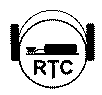

RTC: RTC: Radio Telegraphy Club (Radiotelegrafiklubben)
Motto: CWFE CW forever (Telegrafi för evigt)
Grundades 1990-03-10 av 18 telegrafientusiaster i före detta DDR (Y2). Målet är att bevara, odla och uppmuntra användandet av telegrafi i amatörradio. Tyngdpunkten ligger på operatörsskicklighet i att hantera telegrafi utan datorer, tangentbord eller avkodare.
Tillåter tyska (fullt medlemsskap) och utlänska (stödmedlemsskap) telegrafientusiaster som är villiga att gå med förutsatt att han eller hon kan bevisa tillräcklig telegrafiaktivitet på banden.
Detta mäts av ett poängsystem: 500 poäng måste samlas ihop under de 12 månaderna före medlemsskapsansökan. Telegrafi-QSOn räknas som en poäng, telegrafi-diplom räknas som 50 poäng (högst 5 diplom får räknas) och rag-chew-QSO som är minst 1 timme långa räknas också som 50 poäng. De senare måste dokumenteras med QSL. Ansökningsavgiften är 5 Euro eller US$.
Klubben aktiveter klubbstationerna DKØRTC and DLØRTC.
Tre diplom ges ut nämligen W-RTC-M, CWD, CWAA.